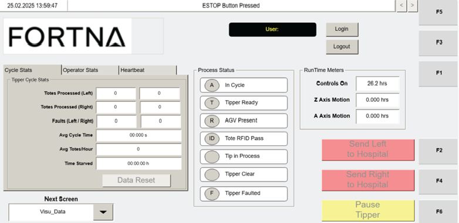

| Procedure ID | proc_reset_tipper_stats_data_to_zero_on_visu_data_screen_v1 |
|---|---|
| Title | Reset Tipper Stats Data to Zero on the VISU_DATA Screen |
| Procedure Type | operation |
| Primary Role | operator |
| Support Safe | Yes |
| Capability Tags | agv_active_errors |
| Access Surface | tipper_hmi |
| Audience Roles | operator |
| Failure Pattern Tags | None |
| Validation Status | needs_sme_review |
| Merge Status | source_finalized |
The Operator Station HMI VISU_DATA screen includes a Tipper Stats section with a DATA RESET button. Pressing DATA RESET clears the displayed tipper statistics data to zero.
Use when you need to clear the displayed Tipper Stats counters on the Operator Station HMI VISU_DATA screen (e.g., to start a fresh measurement window for Totes Processed, Faults, Avg Cycle Time, Avg Totes/Hour, and Time Starved).

Responsible role: operator
Instruction:
On the Operator Station HMI, navigate to the VISU_DATA screen (Operator Station HMI Data Screen).
Expected result:
The VISU_DATA screen is displayed with the Tipper Stats section visible.
Responsible role: operator
Instruction:
On the VISU_DATA screen, locate the DATA RESET button within the Tipper Stats section.
Expected result:
You can identify the DATA RESET button associated with the Tipper Stats section.
Stop or Escalate If:
Responsible role: operator
Instruction:
Press the DATA RESET button for the Tipper Stats section.
Expected result:
The displayed Tipper Stats values reset to zero after the button press.
Stop or Escalate If:
Responsible role: operator
Instruction:
Verify the Tipper Stats values shown on the VISU_DATA screen have reset to zero values as displayed (e.g., Totes Processed, Faults, Avg Cycle Time, Avg Totes/Hour, Time Starved).
Expected result:
All displayed Tipper Stats counters show zero values.
Stop or Escalate If: